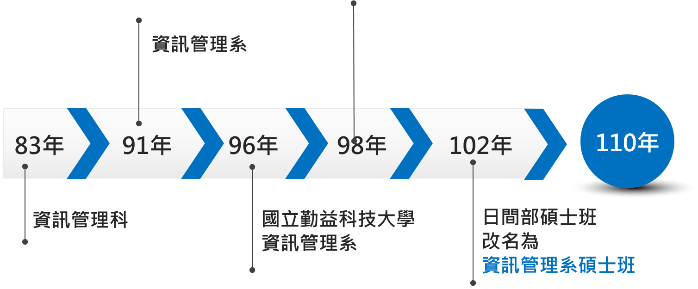

為配合政府發展資訊產業及因應企業對資訊化人力的需求，本系奉准於民國八十三年成立，在全體師生努力下，本系日益成長茁壯。
本系成立初期招收日間部二專學生二班，招收對象以高中、高職畢業生為主。並於85學年度成立夜間部二專班，招收二專學生一班，86學年度起招收夜二專學生二班，87學年度增設進修專校二專二班，民國88年，夜間部改名為「進修推廣部」。至88學年度，本系計有二專日間部四班、二專進修部六班、進修專校六班。91學年度奉准成立四技日間部一班、二專日間部二班、二專進修推廣部一班、進修專校二班。
93學年度二專日間部停招，招收四技日間部二班、四技進修部一班、進修學院二技一班。98年2月以一系一所模式與「研發與科技管理研究所」進行整併，並於98年8月將本系研究所改名為「研發科技與資訊管理研究所」。102年6月為因應系所融合問題及符合本校院發展目標，本系研究所申請改名為「資訊管理系碩士班」，並依據教育部102年12月2日臺教技(二)字第1020177078號核定本系以資訊管理系日間碩士班進行招生。至102學年度，本系計有日間部碩士班二班，碩士在職專班二班、四技日間部八班、四技進修部四班。
本系之發展沿革如下：

本系目前正式學制現況如下：
本系本著PDCA品質管理循環的機制，省思課程教學與系所發展方向，建立自我審視與發展機制，在學校所提供之空間、設備與各年度之經費挹注下，積極執行改善如下：
除內部改善機制外，同時定期接受外部評鑑協會或專業認證機構的審視，執行外部迴圈改善機制。自民國96年本校由技術學院改制為科技大學起算，民國98年本系接受社團法人台灣評鑑協會進行系所專業類評鑑；民國103年持續接受社團法人台灣評鑑協會進行系所專業類評鑑；民國108年轉由委請中華民國管理科學學會「華文商管學院認證」；民國110年接受華文商管教育認證期中評估；同年，全學制接受IEET工程教育認證，並通過三年有效年。
持續改善成效如下：
本系依循校、院及所教育目標，規劃學生專業學習及人文素養陶冶，強化學生職場能力及自信心，並於畢業後擁有足夠專業能力順利進入職場服務。秉持既有基礎，將持續強化教師教學與學生學習成效，繼續為社會培育更多資訊管理人才。
教師團隊涵蓋資訊安全、AI、物聯網、資料科學、系統分析等多元領域。
黃淑賢老師
職稱：助理教授
辦公室：M417
分機：7928
學歷：國立成功大學 工程科學系 博士
研究方向：遊戲式學習、物聯網、STEAM教育、診斷學習與回饋
課程強調專題實作、跨域合作、證照輔導，並與業界技術同步。